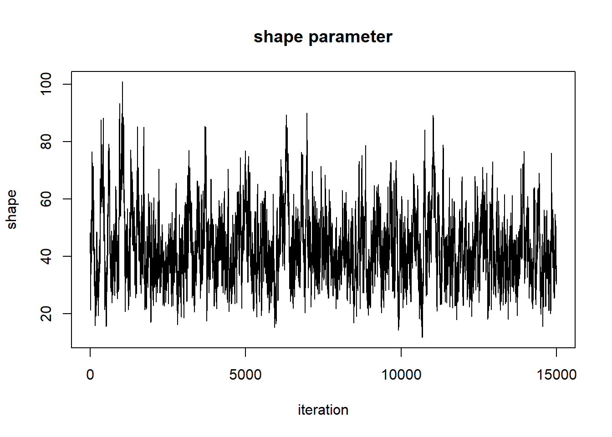
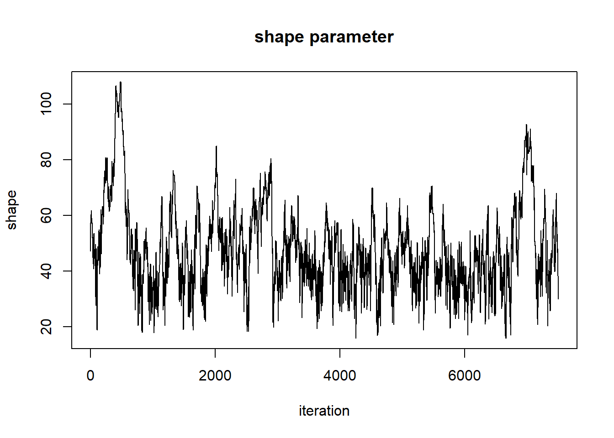
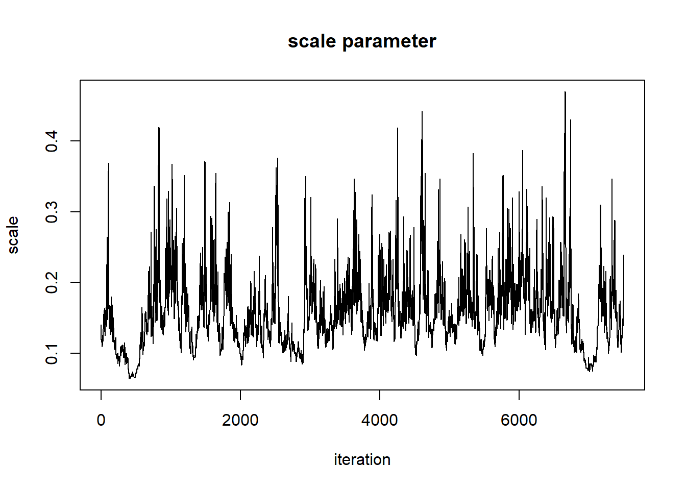
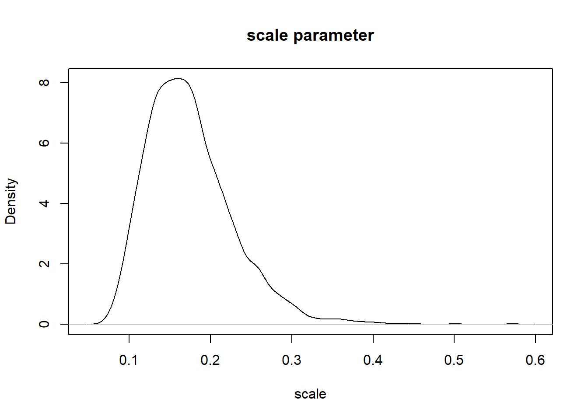
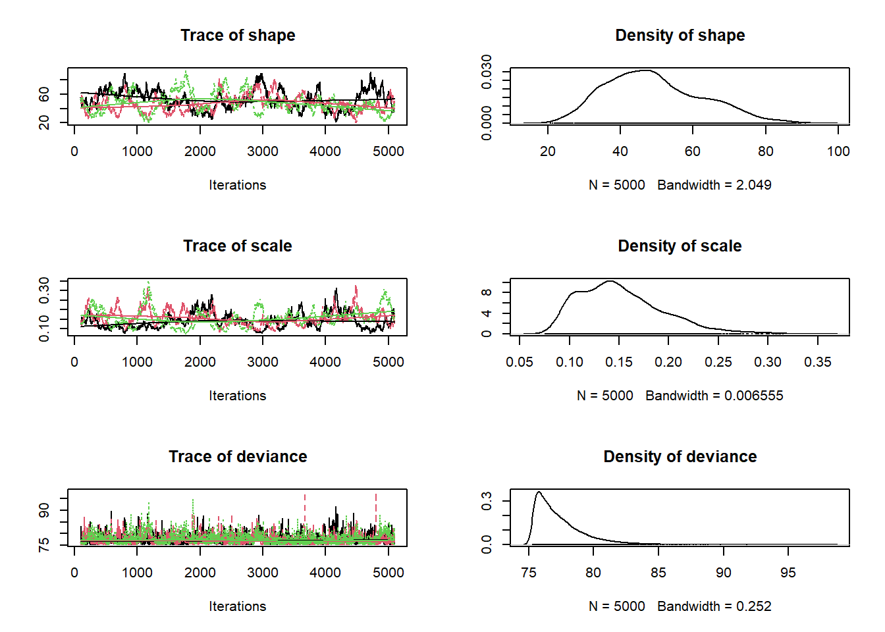

Bayesian Analysis #2: MCMC
NRES 746
October 18, 2016
Markov Chain Monte Carlo
Now in many cases, we simply won’t have the computational power to partition our parameter space into discrete pixels and completely evaluate the posterior probability for all n-dimensional pixels in that space. In these cases, we tend to harness ingenious algorithms known as Markov-Chain Monte Carlo. This approach uses stochastic jumps in parameter space to (eventually) settle on a stationary posterior distribution. The key to MCMC is the following:
The ratio of successful jump probabilities is proportional to the ratio of the posterior probabilities.
The jump probability can be characterized as:
\(Prob(jump) * Prob(accept)\)
The ratio of jump probabilities can be characterized as:
\(\frac{Prob(jump_{b\rightarrow a})\cdot Prob(accept a|b)}{Prob(jump_{a\rightarrow b})\cdot Prob(accept b|a)}\)
This ratio MUST be equal to the ratio of the posterior probabilities:
\(\frac{Posterior(A)}{Posterior(B)}\)
If this rule is met, then in the long run the chain will spend a lot of time occupying high-probability parts of parameter space. With enough jumps, the long-term distribution will match the joint posterior probability distribution.
MCMC is essentially a type of random number generator that is designed to sample from difficult-to-describe (e.g., multivariate, hierarchical) probability distributions. In many/most cases, the posterior distribution for ecological problems is a very difficult-to-describe probability distribution.
Metropolis-Hastings algorithm
This algorithm is very similar to the simulated annealing algorithm! The main difference: the “temperature” doesn’t decrease over time and the parameter k is set to 1.
The M-H algorithm can be expressed as:
\(Prob(accept A|B) = min(1,\frac{Posterior(B)}{Posterior(A)}\cdot \frac{Prob(b\rightarrow a)}{Prob(a\rightarrow b)})\)
Note that essentially this is the same as the Metropolis simulated-annealing algorithm, with the posterior probabilities substituted for the likelihood and the k parameter set to 1
Bivariate normal example
This example is modified from this link by Prof Darren Wilkinson
Remember that MCMC samplers are just a type of random number generator. We can use a Metropolis-Hastings sampler to develop our own random number generator for a fairly simple known distribution. In this example, we use a M-H Sampler to generate random numbers from a standard bivariate normal probability distribution.
We don’t need an MCMC sampler for this simple example. One way to do this would be to use the following code, which draws and visualizes an arbitrary number of independent samples from the bivariate standard normal distribution.
rbvn<-function (n, rho) #function for drawing an arbitrary number of independent samples from the bivariate standard normal distribution.
{
x <- rnorm(n, 0, 1)
y <- rnorm(n, rho * x, sqrt(1 - rho^2))
cbind(x, y)
}
bvn<-rbvn(10000,0.98)
par(mfrow=c(3,2))
plot(bvn,col=1:10000)
plot(bvn,type="l")
plot(ts(bvn[,1]))
plot(ts(bvn[,2]))
hist(bvn[,1],40)
hist(bvn[,2],40)
par(mfrow=c(1,1))library(mvtnorm)##
## Attaching package: 'mvtnorm'## The following object is masked from 'package:emdbook':
##
## dmvnormmetropolisHastings <- function (n, rho=0.98){ # a MCMC sampler implementation of a bivariate random number generator
mat <- matrix(ncol = 2, nrow = n) # matrix for storing the random samples
x <- 0
y <- 0
prev <- dmvnorm(c(x,y),mean=c(0,0),sigma = matrix(c(1,rho,rho,1),ncol=2))
mat[1, ] <- c(x, y) # initialize the markov chain
counter <- 1
while(counter<=n) {
newx <- rnorm(1,x,0.5) # make a jump
newy <- rnorm(1,y,0.5)
newprob <- dmvnorm(c(newx,newy),sigma = matrix(c(1,rho,rho,1),ncol=2)) # assess whether the new jump is good!
ratio <- newprob/prev
prob.accept <- min(1,ratio) # decide whether to accept the new jump!
rand <- runif(1)
if(rand<=prob.accept){
x=newx;y=newy
mat[counter,] <- c(x,y)
counter=counter+1
prev <- newprob
}
}
return(mat)
}Then we can use the M-H sampler to get random samples from this known distribution…
bvn<-metropolisHastings(10000,0.98)
par(mfrow=c(3,2))
plot(bvn,col=1:10000)
plot(bvn,type="l")
plot(ts(bvn[,1]))
plot(ts(bvn[,2]))
hist(bvn[,1],40)
hist(bvn[,2],40)
par(mfrow=c(1,1))Okay, enough with super simple examples- let’s try it for a non-trivial problem, like the Myxomatosis example from the Bolker book!
Myxomatosis revisited (again!)
library(emdbook)
MyxDat <- MyxoTiter_sum
Myx <- subset(MyxDat,grade==1)
head(Myx)## grade day titer
## 1 1 2 5.207
## 2 1 2 5.734
## 3 1 2 6.613
## 4 1 3 5.997
## 5 1 3 6.612
## 6 1 3 6.810Recall that we are modeling the distribution of measured titers (virus loads) for Australian rabbits. Bolker chose to use a Gamma distribution. Here is the empirical distribution:
hist(Myx$titer,freq=FALSE)
We need to estimate the gamma rate and shape parameters that best fit this empirical distribution. Here is one example of a Gamma fit to this distribution:
hist(Myx$titer,freq=FALSE)
curve(dgamma(x,shape=40,scale=0.15),add=T,col="red")
Recall that the 2-D (log) likelihood surface looks something like this:

Here is an implementation of the M-H algorithm to find the joint posterior distribution!
First, we need a likelihood function (our old friend!)
GammaLikelihoodFunction <- function(params){
prod(dgamma(Myx$titer,shape=params['shape'],scale=params['scale'],log=F))
}
params <- c(shape=40,scale=0.15)
params## shape scale
## 40.00 0.15GammaLikelihoodFunction(params)## [1] 2.906766e-22Then, we need a prior distribution for our parameters! Let’s assign relatively flat priors for both of our parameters. In this case, let’s assign a \(gamma(shape=0.01,scale=100)\) for the shape parameter and a \(gamma(shape=0.1,scale=10)\) distribution for the scale parameter:
GammaPriorFunction <- function(params){
prior <- c(shape=NA,scale=NA)
prior['shape'] <- dgamma(params['shape'],shape=0.01,scale=100)
prior['scale'] <- dgamma(params['scale'],shape=0.001,scale=1000)
# prior['shape'] <- dunif(params['shape'],3,100)
# prior['scale'] <- dunif(params['scale'],0.01,0.5)
return(prod(prior))
}
curve(dgamma(x,shape=0.01,scale=1000),3,100)
params <- c(shape=40,scale=0.15)
params## shape scale
## 40.00 0.15GammaPriorFunction(params)## [1] 1.104038e-06Note that we are also assuming (fairly standard assumption) that the shape and scale are independent in the prior (multiplicative probabilities for the joint prior).
Then, we need a function that can compute the ratio of posterior probabilities for any given jump in parameter space. Because we are dealing with a ratio of posterior probabilities, we do NOT need to compute the normalization constant. Without the need for a normalization constant, we just need to compute the ratio of weighted likelihoods (that is, the likelihood weighted by the prior)
PosteriorRatio <- function(oldguess,newguess){
oldLik <- max(1e-90,GammaLikelihoodFunction(oldguess))
oldPrior <- max(1e-90,GammaPriorFunction(oldguess))
newLik <- GammaLikelihoodFunction(newguess)
newPrior <- GammaPriorFunction(newguess)
return((newLik*newPrior)/(oldLik*oldPrior))
}
oldguess <- params
newguess <- c(shape=39,scale=0.15)
PosteriorRatio(oldguess,newguess)## [1] 0.01423757Then we need a function for making new guesses, or jumps in parameter space:
# function for making new guesses
newGuess <- function(oldguess){
sdshapejump <- 4
sdscalejump <- 0.07
jump <- c(shape=rnorm(1,mean=0,sd=sdshapejump),scale=rnorm(1,0,sdscalejump))
newguess <- abs(oldguess + jump)
return(newguess)
}
# set a new "guess" near to the original guess
newGuess(oldguess=params) # each time is different- this is the first optimization procedure with randomness built in## shape scale
## 29.7815940 0.1980339newGuess(oldguess=params)## shape scale
## 40.37349215 0.08592807newGuess(oldguess=params)## shape scale
## 42.5866789 0.1065055Now we are ready to implement the Metropolis-Hastings MCMC algorithm:
We need a starting point:
startingvals <- c(shape=75,scale=0.28) # starting point for the algorithmLet’s play with the different functions we have so far…
newguess <- newGuess(startingvals) # take a jump in parameter space
newguess## shape scale
## 71.2901411 0.3355522PosteriorRatio(startingvals,newguess) # difference in posterior ratio## [1] 0Now let’s look at the Metropolis routine:
chain.length <- 10
oldguess <- startingvals
guesses <- matrix(0,nrow=chain.length,ncol=2)
colnames(guesses) <- names(startingvals)
counter <- 1
while(counter <= chain.length){
newguess <- newGuess(oldguess)
post.rat <- PosteriorRatio(oldguess,newguess)
prob.accept <- min(1,post.rat)
rand <- runif(1)
if(rand<=prob.accept){
oldguess <- newguess
guesses[counter,] <- newguess
counter=counter+1
}
}
# visualize!
image(x=shapevec,y=scalevec,z=surface2D,zlim=c(-1000,-30),col=topo.colors(12))
contour(x=shapevec,y=scalevec,z=surface2D,levels=c(-30,-40,-80,-500),add=T)
lines(guesses,col="red")
Let’s run it for longer…
chain.length <- 100
oldguess <- startingvals
guesses <- matrix(0,nrow=chain.length,ncol=2)
colnames(guesses) <- names(startingvals)
counter <- 1
while(counter <= chain.length){
newguess <- newGuess(oldguess)
post.rat <- PosteriorRatio(oldguess,newguess)
prob.accept <- min(1,post.rat)
rand <- runif(1)
if(rand<=prob.accept){
oldguess <- newguess
guesses[counter,] <- newguess
counter=counter+1
}
}
# visualize!
image(x=shapevec,y=scalevec,z=surface2D,zlim=c(-1000,-30),col=topo.colors(12))
contour(x=shapevec,y=scalevec,z=surface2D,levels=c(-30,-40,-80,-500),add=T)
lines(guesses,col="red")How about for even longer??
chain.length <- 1000
oldguess <- startingvals
guesses <- matrix(0,nrow=chain.length,ncol=2)
colnames(guesses) <- names(startingvals)
counter <- 1
while(counter <= chain.length){
newguess <- newGuess(oldguess)
post.rat <- PosteriorRatio(oldguess,newguess)
prob.accept <- min(1,post.rat)
rand <- runif(1)
if(rand<=prob.accept){
oldguess <- newguess
guesses[counter,] <- newguess
counter=counter+1
}
}
# visualize!
image(x=shapevec,y=scalevec,z=surface2D,zlim=c(-1000,-30),col=topo.colors(12))
contour(x=shapevec,y=scalevec,z=surface2D,levels=c(-30,-40,-80,-500),add=T)
lines(guesses,col="red")
This looks better! The search algorithm is finding the high-likelihood parts of parameter space pretty well!
Now, let’s look at the chain for the “shape” parameter
plot(1:chain.length,guesses[,'shape'],type="l",main="shape parameter",xlab="iteration",ylab="shape")
And for the scale parameter…
plot(1:chain.length,guesses[,'scale'],type="l",main="scale parameter",xlab="iteration",ylab="scale")
Can we say that these chains have converged on the posterior distribution for the shape parameter??
First of all, the beginning of the chain “remembers” the starting value, and is therefore not a stationary distribution. We need to remove the first part of the chain, called the ‘burn-in’.
burn.in <- 100
MCMCsamples <- guesses[-c(1:burn.in),]
chain.length=chain.length-burn.in
plot(1:chain.length,MCMCsamples[,'shape'],type="l",main="shape parameter",xlab="iteration",ylab="shape")
plot(1:chain.length,MCMCsamples[,'scale'],type="l",main="scale parameter",xlab="iteration",ylab="scale")
But it still doesn’t look all that great. Let’s run it for even longer, and see if we get something that looks more like a proper random number generator (white noise)…
chain.length <- 20000
oldguess <- startingvals
guesses <- matrix(0,nrow=chain.length,ncol=2)
colnames(guesses) <- names(startingvals)
counter <- 1
while(counter <= chain.length){
newguess <- newGuess(oldguess)
post.rat <- PosteriorRatio(oldguess,newguess)
prob.accept <- min(1,post.rat)
rand <- runif(1)
if(rand<=prob.accept){
oldguess <- newguess
guesses[counter,] <- newguess
counter=counter+1
}
}
# visualize!
image(x=shapevec,y=scalevec,z=surface2D,zlim=c(-1000,-30),col=topo.colors(12))
contour(x=shapevec,y=scalevec,z=surface2D,levels=c(-30,-40,-80,-500),add=T)
lines(guesses,col="red")
Let’s first remove the first 5000 samples as a burn-in
burn.in <- 5000
MCMCsamples <- guesses[-c(1:burn.in),]
chain.length=chain.length-burn.inNow, let’s look at the chains again
plot(1:chain.length,MCMCsamples[,'shape'],type="l",main="shape parameter",xlab="iteration",ylab="shape")
plot(1:chain.length,MCMCsamples[,'scale'],type="l",main="scale parameter",xlab="iteration",ylab="scale")
When evaluating these trace plots, we are hoping to see a “stationary distribution” that looks like white noise. This trace plot looks like it might have a little autocorrelation. One way to “fix” this is to thin the MCMC samples:
thinnedMCMC <- MCMCsamples[seq(1,chain.length,by=10),]
plot(1:nrow(thinnedMCMC),thinnedMCMC[,'shape'],type="l",main="shape parameter",xlab="iteration",ylab="shape")
plot(1:nrow(thinnedMCMC),thinnedMCMC[,'scale'],type="l",main="scale parameter",xlab="iteration",ylab="scale")
Now we can examine our posterior distribution!
plot(density(thinnedMCMC[,'scale']),main="scale parameter",xlab="scale")
plot(density(thinnedMCMC[,'shape']),main="shape parameter",xlab="shape")
And we can visualize as before.
par(mfrow=c(3,2))
plot(thinnedMCMC,col=1:10000)
plot(thinnedMCMC,type="l")
plot(ts(thinnedMCMC[,1]))
plot(ts(thinnedMCMC[,2]))
hist(thinnedMCMC[,1],40)
hist(thinnedMCMC[,2],40)
par(mfrow=c(1,1))Hopefully it is clear that the Metropolis-Hastings MCMC method could be modified to fit arbitrary numbers of free parameters for arbitrary models. However, the M-H algorithm is not necessarily the most easily generalizable to a host of different model types. That award tends to go to the Gibbs sampler. In lab we will play around with Gibbs samplers, mostly using an amazing piece of software called BUGS (Bayesian Inference Using Gibbs Sampling).
NOTE: BUGS implementations (e.g., JAGS) actually tend to use a combination of M-H and Gibbs sampling!
Gibbs sampler
The Gibbs sampler is amazingly straightforward and powerful. Basically, the algorithm successively samples from the full conditional probability distribution – that is, the posterior distribution for arbitrary parameter i conditional on known values for all other parameters in the model.
In many cases, we can’t work out the full posterior distribution for our model directly, but we CAN work out the conditional posterior distribution analytically if all parameters except for the parameter in question were known with certainty. This is especially true if we use conjugate priors for our model specification. Even if not, the full conditional is often analytically tractable. Nonetheless, even if it’s not analytically tractable, we can use a univariate M-H procedure as a “brute force” last resort!
Bivariate normal example
Again, remember that MCMC samplers are just a type of random number generator. We can use a Gibbs sampler to develop our own random number generator for a fairly simple known distribution. In this example (same as before), we use a Gibbs Sampler to generate random numbers from a standard bivariate normal probability distribution. Notice that the Gibbs sampler is in many ways more simple and straightforward than the M-H algorithm.
We don’t need a Gibbs Sampler for this simple example. One way to do this would be to use the following code, which draws and visualizes an arbitrary number of independent samples from the bivariate standard normal distribution.
rbvn<-function (n, rho){ #function for drawing an arbitrary number of independent samples from the bivariate standard normal distribution.
x <- rnorm(n, 0, 1)
y <- rnorm(n, rho * x, sqrt(1 - rho^2))
cbind(x, y)
}
bvn<-rbvn(10000,0.98)
par(mfrow=c(3,2))
plot(bvn,col=1:10000)
plot(bvn,type="l")
plot(ts(bvn[,1]))
plot(ts(bvn[,2]))
hist(bvn[,1],40)
hist(bvn[,2],40)
par(mfrow=c(1,1))gibbs<-function (n, rho){ # a gibbs sampler implementation of a bivariate random number generator
mat <- matrix(ncol = 2, nrow = n) # matrix for storing the random samples
x <- 0
y <- 0
mat[1, ] <- c(x, y) # initialize the markov chain
for (i in 2:n) {
x <- rnorm(1, rho * y, sqrt(1 - rho^2)) # sample from x conditional on y
y <- rnorm(1, rho * x, sqrt(1 - rho^2)) # sample from y conditional on x
mat[i, ] <- c(x, y)
}
mat
}Then we can use the Gibbs sampler to get random samples from this known distribution…
bvn<-gibbs(10000,0.98)
par(mfrow=c(3,2))
plot(bvn,col=1:10000)
plot(bvn,type="l")
plot(ts(bvn[,1]))
plot(ts(bvn[,2]))
hist(bvn[,1],40)
hist(bvn[,2],40)
par(mfrow=c(1,1))There is quite a bit of apparent autocorrelation in the samples of the markov chain here. Gibbs samplers frequently have this issue!
Back to Myxomatosis!
Aside: the BUGS language
Finally, let’s build a Gibbs sampler for our favorite Myxomatosis example! To do this, we will use the BUGS language, as implemented in JAGS, to help us!
The BUGS language looks simlar to R, but there are several key differences:
- First of all, BUGS is a compiled language, so the order of operations in your code doesn’t really matter
- BUGS is not vectorized- you need to use FOR loops!
- Several probability distributions are parameterized very differently in BUGS. Notably, the normal distribution is parameterized with a mean and a precision (\(1/Variance\)).
Here is the myxomatosis example, as implemented in the BUGS language:
model {
#############
# LIKELIHOOD
############
for(obs in 1:n.observations){
titer[obs] ~ dgamma(shape,rate)
}
#############
# PRIORS
############
shape ~ dgamma(0.001,0.001)
scale ~ dgamma(0.01,0.01)
rate <- 1/scale # convert the scale parameter to a "rate" for BUGS
}We can use the “sink” function in R to write out this model to a text file:
sink("BUGSmodel.txt")
cat("
model {
#############
# LIKELIHOOD
############
for(obs in 1:n.observations){
titer[obs] ~ dgamma(shape,rate)
}
#############
# PRIORS
############
shape ~ dgamma(0.001,0.001)
scale ~ dgamma(0.01,0.01)
rate <- 1/scale
}
")##
## model {
##
## #############
## # LIKELIHOOD
## ############
## for(obs in 1:n.observations){
## titer[obs] ~ dgamma(shape,rate)
## }
##
## #############
## # PRIORS
## ############
## shape ~ dgamma(0.001,0.001)
## scale ~ dgamma(0.01,0.01)
## rate <- 1/scale
## }
## sink()Now that we have the BUGS model packaged as a text file, we “package” the data into a single list object that contains all the relevant data referenced in the BUGS code:
myx.data.for.bugs <- list(
titer = Myx$titer,
n.observations = length(Myx$titer)
)
myx.data.for.bugs## $titer
## [1] 5.207 5.734 6.613 5.997 6.612 6.810 5.930 6.501 7.182 7.292 7.819
## [12] 7.489 6.918 6.808 6.235 6.916 4.196 7.682 8.189 7.707 7.597 7.112
## [23] 7.354 7.158 7.466 7.927 8.499
##
## $n.observations
## [1] 27Then we need to define the initial values for all parameters. It is convenient to define this as a function, so that each MCMC chain can be initialized with different starting values. This will become clear later!
init.vals.for.bugs <- function(){
init.list <- list(
shape=runif(1,20,100),
scale=runif(1,0.05,0.3)
)
return(init.list)
}
init.vals.for.bugs()## $shape
## [1] 32.31097
##
## $scale
## [1] 0.2416489init.vals.for.bugs()## $shape
## [1] 38.70362
##
## $scale
## [1] 0.293828init.vals.for.bugs()## $shape
## [1] 57.86737
##
## $scale
## [1] 0.07734904Now we can call JAGS!
library(R2jags)
library(coda)
params.to.store <- c("shape","scale")
jags.fit <- jags(data=myx.data.for.bugs,inits=init.vals.for.bugs,parameters.to.save=params.to.store,n.iter=5000,model.file="BUGSmodel.txt",n.chains = 3,n.burnin = 0 )## module glm loaded## Compiling model graph
## Resolving undeclared variables
## Allocating nodes
## Graph information:
## Observed stochastic nodes: 27
## Unobserved stochastic nodes: 2
## Total graph size: 37
##
## Initializing modeljagsfit.mcmc <- as.mcmc(jags.fit) # convert to "MCMC" object (coda package)
summary(jagsfit.mcmc)##
## Iterations = 1:4996
## Thinning interval = 5
## Number of chains = 3
## Sample size per chain = 1000
##
## 1. Empirical mean and standard deviation for each variable,
## plus standard error of the mean:
##
## Mean SD Naive SE Time-series SE
## deviance 77.7411 2.55422 0.046633 0.34042
## scale 0.1652 0.06165 0.001126 0.01109
## shape 46.6595 13.90224 0.253819 2.06740
##
## 2. Quantiles for each variable:
##
## 2.5% 25% 50% 75% 97.5%
## deviance 75.38751 76.035 76.9887 78.45 85.1954
## scale 0.09326 0.123 0.1518 0.19 0.3372
## shape 20.91365 36.616 45.7822 56.28 73.8625plot(jagsfit.mcmc)
Assessing convergence
This is probably a good time to talk about convergence of MCMC chains on the stationary posterior distribution. The above plots don’t look great. We want to see white noise, and we want to see chains that look similar to one another.
The first check is just visual- we look for the following to assess convergence:
- The chains for each parameter, when viewed as a “trace plot” should look like white noise, or similar.
- Multiple chains with different starting conditions should look the same!!
One way we might be able to do a better job here is to run the chains longer and discard the initial samples as a burn in!
We can also try to reduce serial autocorrelation by thinning our chain- here we retain only 1 out of every 20 samples.
jags.fit <- jags(data=myx.data.for.bugs,inits=init.vals.for.bugs,parameters.to.save=params.to.store,n.iter=50000,model.file="BUGSmodel.txt",n.chains = 3, n.burnin=10000,n.thin = 20)## Compiling model graph
## Resolving undeclared variables
## Allocating nodes
## Graph information:
## Observed stochastic nodes: 27
## Unobserved stochastic nodes: 2
## Total graph size: 37
##
## Initializing modeljagsfit.mcmc <- as.mcmc(jags.fit) # convert to "MCMC" object (coda package)
summary(jagsfit.mcmc)##
## Iterations = 10001:49981
## Thinning interval = 20
## Number of chains = 3
## Sample size per chain = 2000
##
## 1. Empirical mean and standard deviation for each variable,
## plus standard error of the mean:
##
## Mean SD Naive SE Time-series SE
## deviance 77.282 1.89294 0.0244378 0.049514
## scale 0.155 0.04343 0.0005607 0.002057
## shape 47.994 12.71093 0.1640973 0.613051
##
## 2. Quantiles for each variable:
##
## 2.5% 25% 50% 75% 97.5%
## deviance 75.38151 75.9135 76.7214 78.0754 82.3545
## scale 0.09061 0.1236 0.1479 0.1782 0.2593
## shape 26.89894 38.7795 46.8371 55.8687 75.7883plot(jagsfit.mcmc)
Just visually, this looks better. Now we can use some more quantitative convergence metrics.
The Gelman-Rubin diagnostic
One simple and intuitive convergence diagnostic is the Gelman-Rubin diagnostic, which assesses whether chains are more different from one another than they should be on the basis of simple Monte Carlo error:
gelman.diag(jagsfit.mcmc)## Potential scale reduction factors:
##
## Point est. Upper C.I.
## deviance 1.00 1.01
## scale 1.01 1.04
## shape 1.01 1.02
##
## Multivariate psrf
##
## 1.01In general, values of 1.1 or higher are considered poorly converged (sometimes the less stringent criterion of 1.2 is used). If so, you should try running longer chains!
So this model looks pretty good!
Useful links for MCMC
Darren Winkinson’s research blog
Where do the full conditionals come from in Gibbs sampling?